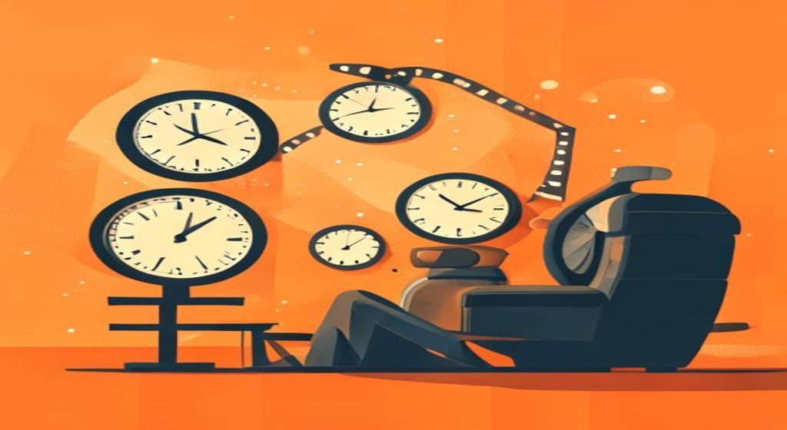
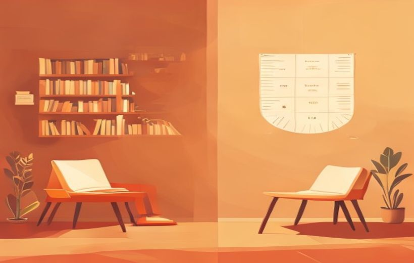

Tiempo real, diegético y narrativo, estructuras narrativas temporales, ritmo interno y externo, elipsis, flashback y flashforward, y el tiempo subjetivo.

El cine juega con el tiempo: lo estira, lo salta, lo repite.
El cine nunca cuenta la realidad en tiempo real — comprime, estira, salta y reordena el tiempo para que la historia funcione. Sus herramientas: las estructuras narrativas temporales, el ritmo, la elipsis, los saltos temporales y el tiempo subjetivo.
🧠 Los conceptos
Despliega cada tarjeta, léela con calma y márcala como entendida. La barra de arriba irá subiendo.
El tiempo es un recurso estructural: toda pieza audiovisual está sujeta a una duración. El PDF distingue tres tiempos:
| Tiempo | Qué es |
|---|---|
| Tiempo real | Tiempo que tarda en ocurrir un acontecimiento en la realidad. |
| Tiempo diegético | Tiempo real que transcurre dentro de la historia. |
| Tiempo narrativo | Manipulación del tiempo real para contar una historia. Puede expandirse, comprimirse, fragmentarse o alterarse según necesidades dramáticas o estéticas. |
El propio PDF lanza la pregunta: ¿puede coincidir el tiempo real/diegético con el tiempo narrativo? Sí — por ejemplo, con un montaje sintético el tiempo narrativo y el tiempo real se aproximan (lo verás en el concepto del ritmo).
Tiempo como recurso estructural — «Toda pieza audiovisual está sujeta a una duración».
Tiempo real — «Tiempo que tarda en ocurrir un acontecimiento en la realidad». Tiempo diegético — «Tiempo real que transcurre dentro de la historia».
Tiempo narrativo — «Manipulación del tiempo real para contar una historia. Puede expandirse, comprimirse, fragmentarse o alterarse para responder a necesidades dramáticas o estéticas».
El orden en el que aparecen los acontecimientos delimita la estructura narrativa del relato. El PDF distingue seis estructuras:

El orden de los acontecimientos define la estructura del relato.
| Estructura | Cómo funciona |
|---|---|
| Lineal | Los hechos se cuentan en orden cronológico. |
| Lineal inversa | Orden cronológico inverso: desde el final de la acción hasta el inicio. |
| No lineal | No sigue una línea cronológica clara. |
| Paralela o alterna | Aparecen diferentes líneas narrativas simultáneamente. Paralela: no se cruzan. Alterna: sí se cruzan. |
| Circular / Cíclica | Empieza y termina en puntos similares. Suele haber una resignificación. |
| In media res | Empieza por la mitad del relato, vuelve a los precedentes hasta llegar al tiempo presente y continúa linealmente hasta el final. |
Estructuras narrativas temporales — «El orden en el que aparezcan los acontecimientos delimitará la estructura narrativa del relato». Los seis tipos: lineal, lineal inversa («desde el final de la acción hasta el inicio»), no lineal, paralela o alterna («paralela no se cruzan y alterna sí»), circular/cíclica («empieza y termina en puntos similares, suele haber una resignificación») e in media res («empieza por la mitad del relato, vuelve a los precedentes hasta llegar al tiempo presente y continuar linealmente hasta el final»).
La temporalidad narrativa no se decide en un solo momento: se trabaja durante las tres fases de la producción audiovisual.
| Fase | Qué se trabaja del tiempo |
|---|---|
| Escritura del guion (preproducción) | Se delimitan los hechos que ocurren dentro de la historia (tiempo diegético), la estructura narrativa según la linealidad y se estima la duración aproximada de la pieza. |
| Rodaje y puesta en escena (producción) | Se trabaja la duración de las acciones y el ritmo interno de cada plano. El tiempo interno de cada plano es una interpretación del tiempo en el guion literario. |
| Montaje | Se determina el ritmo narrativo de la pieza y de cada una de sus secuencias. |
Además, hace falta coherencia interna: cuando empleamos estructuras no lineales o saltos temporales, estos deben estar justificados y ser identificables para el espectador. El PDF lo ilustra con una escena de Once Upon a Time in America y pregunta: ¿qué recursos se emplean para identificar el flashback?
Construcción de la temporalidad narrativa — «se trabaja durante las tres fases de una producción audiovisual»: en el guion se delimitan tiempo diegético, estructura y duración estimada; en el rodaje, «la duración de las acciones y el ritmo interno de cada plano»; en el montaje, «el ritmo narrativo de la pieza y cada una de sus secuencias».
Coherencia interna — «Cuando empleamos estructuras no lineales o saltos temporales, estos deben de estar justificados y ser identificables para el espectador».
El guion literario sigue un formato universal, y eso permite usarlo como regla de medir: una página de guion literario estándar equivale a un minuto en pantalla.
El guion permite estimar la duración: una página ≈ un minuto en pantalla.
¿Es fiable? El PDF lo pone a prueba con dos casos reales:
| Película | Duración | Páginas de guion |
|---|---|---|
| Dunkerque (2017) | 107 minutos | 81 páginas |
| Shaun of the Dead (2004) | 99 minutos | 131 páginas |
Guion como herramienta para medir el tiempo — «El guion literario sigue un formato universal. Una página de guion literario estándar equivale a un minuto en pantalla». «Las acciones suelen consumir más tiempo en pantalla que los diálogos, aunque estos ocupen más en el papel».
¿Es fiable? — Dunkerque (2017): 107 minutos con 81 páginas; Shaun of the Dead (2004): 99 minutos con 131 páginas.
El ritmo narrativo surge de la combinación entre lo que ocurre dentro del plano (ritmo interno) y la forma en que los planos se articulan entre sí (ritmo externo).
| Tipo de ritmo | Qué es |
|---|---|
| Ritmo interno | Marcado por los elementos que vemos dentro del plano. Se trabaja durante la puesta en escena. |
| Ritmo externo | Regulado por el montaje. Define la duración de las escenas, la cantidad de planos, su cadencia y la estructura del relato. |
| Ritmo visual | Configurado por la disposición de elementos plásticos (formas, colores o texturas) dentro de un plano. |
| Ritmo sonoro | Marcado por todo lo que escuchamos: elementos diegéticos (sonido ambiente, diálogos) y no diegéticos (voz en off, música). |
Elementos que configuran el ritmo interno:
Elementos que configuran el ritmo externo:
| Montaje analítico | Montaje sintético |
|---|---|
| Numerosos planos de poca duración. | Pocos planos de larga duración. |
| Uso de planos cerrados. | Uso de planos abiertos. |
| Fragmenta espacial y temporalmente la escena. | El tiempo narrativo y el tiempo real se aproximan. |
| Permite mostrar diferentes detalles de la acción. | Presenta la acción de una manera más parecida a la realidad. |
Ritmo narrativo — «surge de la combinación entre lo que ocurre dentro del plano (ritmo interno) y la forma en que los planos se articulan entre sí (ritmo externo)». El interno «está marcado por los elementos que vemos dentro del plano y se trabajan durante la puesta en escena»; el externo «está regulado por el montaje: define la duración de las escenas, la cantidad de planos, su cadencia y la estructura del relato».
Ritmo visual — «configurado por la disposición de elementos plásticos (formas, colores o texturas) dentro de un plano». Ritmo sonoro — «marcado por todo lo que escuchamos», elementos diegéticos (sonido ambiente, diálogos) y no diegéticos (voz en off, música).
Manipulación del tiempo narrativo — «Elipsis, flashbacks, cámaras lentas y cámaras rápidas…» (elemento del ritmo externo).
Ritmo lento — «transmite contemplación, introspección, armonía, monotonía, lentitud…». Ritmo acelerado — «transmiten dinamismo, tensión, urgencia, rapidez…».
La elipsis y los saltos temporales son herramientas narrativas que permiten manipular la estructura del tiempo en una obra audiovisual con fines expresivos y dramáticos.
| Recurso | Definición |
|---|---|
| Elipsis | Omitir deliberadamente una parte de la acción, tiempo o espacio en la narrativa sin romper la continuidad ni la comprensión de la historia. |
| Saltos temporales | «Interrupciones» en la historia que narran un suceso pasado o futuro. Pueden ser flashbacks o flashforward. |
| Flashback | Interrupción de la historia para narrar un suceso pasado. |
| Flashforward | Interrupción de la historia para narrar un suceso que ocurrirá más adelante; a menudo muestra parte del desenlace para mantener el interés. |
Elipsis y saltos temporales — «herramientas narrativas que permiten manipular la estructura del tiempo en una obra audiovisual con fines expresivos y dramáticos».
Elipsis — «consiste en omitir deliberadamente una parte de la acción, tiempo o espacio en la narrativa sin romper la continuidad ni la comprensión de la historia».
Saltos temporales — «Son "interrupciones" en la historia que narran un suceso pasado o futuro. Pueden ser flashbacks o flashforward». Flashback — «Interrupción de la historia para narrar un suceso pasado». Flashforward — «Interrupción de la historia para narrar un suceso que ocurrirá más adelante, a menudo muestra parte del desenlace para mantener el interés».
El PDF distingue tres tipos de elipsis:
| Tipo | Cómo se usa |
|---|---|
| Elipsis narrativa | Las más comunes. Omiten información irrelevante de la trama para aportar agilidad. |
| Elipsis inherente | El salto temporal causa un impacto dramático o simbólico. El match cut es un recurso muy empleado en este tipo de elipsis. |
| Elipsis de estructura | Géneros como el misterio omiten acciones para generar suspense; la trama de algunas películas obliga al uso de determinados saltos temporales; también se emplea para omitir contenido violento o sensible. |
Elipsis narrativa — «Son las más comunes, omiten información irrelevante de la trama para aportar agilidad».
Elipsis inherente — «El salto temporal causa un impacto dramático o simbólico. El match cut es un recurso muy empleado en este tipo de elipsis».
Elipsis de estructura — «Géneros como el misterio omiten acciones para generar suspense; la trama de algunas películas obliga el uso de determinados saltos temporales; también se emplea para omitir contenido violento o sensible».
El tiempo subjetivo en pantalla es una construcción narrativa que no se limita a la cronología objetiva de los hechos, sino que se ajusta a la percepción emocional, psicológica y sensorial de los personajes o de la mirada del narrador.
El caso Memento (2000): el tiempo subjetivo es el eje estructural de la trama. El protagonista sufre amnesia retrógrada, por lo que no recuerda acontecimientos recientes. La película adopta su punto de vista y presenta los acontecimientos en orden cronológico inverso: el espectador, como Leonard, desconoce lo ocurrido antes de cada momento y debe reconstruir la historia a partir de fragmentos (notas, fotos, tatuajes).
Tiempo subjetivo — «construcción narrativa que no se limita a la cronología objetiva de los hechos, sino que se ajusta a la percepción emocional, psicológica y sensorial de los personajes o de la mirada del narrador». «Cuando la narración se ajusta a la perspectiva de un personaje, el tiempo se adapta a su experiencia interna».
Elemento estructural — «El tiempo subjetivo puede convertirse en un elemento estructural. Ej.: Memento (2000), El efecto mariposa (2004)». En Memento, el protagonista sufre amnesia retrógrada y la película presenta los acontecimientos en orden cronológico inverso; el espectador reconstruye la historia a partir de fragmentos (notas, fotos, tatuajes). También «puede emplearse para intensificar la tensión narrativa en escenas de acción o suspense».
📖 Vocabulario del examen
Cómo lo digo fácil → cómo lo llama el PDF (y como saldrá en el examen).
| En fácil | Término oficial del PDF |
|---|---|
| Lo que dura algo de verdad en la realidad | Tiempo real — tiempo que tarda en ocurrir un acontecimiento en la realidad |
| El tiempo dentro del mundo de la historia | Tiempo diegético — tiempo real que transcurre dentro de la historia |
| Comprimir, estirar o romper el tiempo para contar la historia | Tiempo narrativo — manipulación del tiempo real; puede expandirse, comprimirse, fragmentarse o alterarse |
| El orden en que se cuentan las cosas | Estructuras narrativas temporales — lineal, lineal inversa, no lineal, paralela o alterna, circular/cíclica, in media res |
| Que el espectador entienda los saltos en el tiempo | Coherencia interna — los saltos temporales deben estar justificados y ser identificables |
| Calcular cuánto durará la peli con el guion | Guion como herramienta para medir el tiempo — una página de guion estándar ≈ un minuto en pantalla |
| Saltar al pasado o al futuro | Saltos temporales — interrupciones que narran un suceso pasado (flashback) o futuro (flashforward) |
| Cortarse lo aburrido / saltarse tiempo | Elipsis — omitir deliberadamente acción, tiempo o espacio sin romper la continuidad ni la comprensión. Tipos: narrativa, inherente, de estructura |
| Elipsis con carga dramática y corte de imágenes que encajan | Elipsis inherente + match cut (recurso muy empleado en este tipo de elipsis) |
| Cámara lenta / cámara rápida | Manipulación del tiempo narrativo — elipsis, flashbacks, cámaras lentas y cámaras rápidas (elemento del ritmo externo) |
| Velocidad de lo que pasa dentro del plano | Ritmo interno — se trabaja durante la puesta en escena |
| Velocidad que crea el montaje (cuántos planos, cuánto duran) | Ritmo externo — regulado por el montaje; clave: cadencia de los planos |
| Muchos planos cortos vs pocos planos largos | Montaje analítico vs montaje sintético (en el sintético el tiempo narrativo y el real se aproximan) |
| El tiempo como lo vive el personaje, no como marca el reloj | Tiempo subjetivo — se ajusta a la percepción emocional, psicológica y sensorial; puede ser elemento estructural (Memento) |
🃏 Flashcards
Toca cada tarjeta para girarla. Tapa la definición con la mano y comprueba si te la sabes.
✅ Test rápido
6 preguntas tipo examen. Elige una opción y te corrige al momento con la explicación.
⭐ Preguntas del final de la presentación
La presentación no incluye una diapositiva de autoevaluación, pero la profesora va lanzando preguntas dentro de las diapositivas. Aquí tienes 3 preguntas de práctica construidas sobre esas mismas preguntas y el contenido del PDF.
Sí pueden coincidir o aproximarse: cuando la pieza presenta la acción de manera parecida a la realidad, como ocurre con el montaje sintético (pocos planos de larga duración y abiertos), «el tiempo narrativo y el tiempo real se aproximan». Lo habitual, sin embargo, es que el tiempo narrativo manipule el real mediante elipsis, saltos temporales y cámaras lentas o rápidas.
Los saltos temporales son «interrupciones» en la historia que narran un suceso pasado o futuro. Pueden ser flashbacks (interrupción para narrar un suceso pasado) o flashforwards (interrupción para narrar un suceso que ocurrirá más adelante; a menudo muestra parte del desenlace para mantener el interés). Junto con la elipsis, son herramientas que permiten manipular la estructura del tiempo con fines expresivos y dramáticos — y exigen coherencia interna: deben estar justificados y ser identificables para el espectador.
La elipsis omite deliberadamente una parte de la acción, tiempo o espacio sin romper la continuidad ni la comprensión. Tres tipos:
Ambos son formas de configurar el ritmo externo (el regulado por el montaje):
Recuerda el efecto del ritmo resultante: un ritmo lento transmite contemplación, introspección, armonía o monotonía; un ritmo acelerado transmite dinamismo, tensión, urgencia y rapidez.